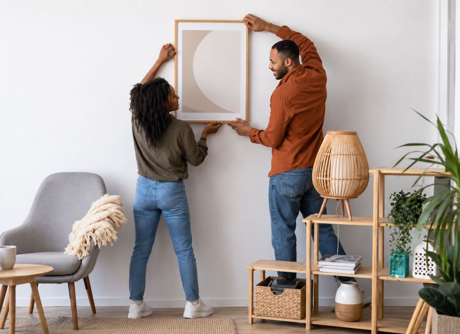
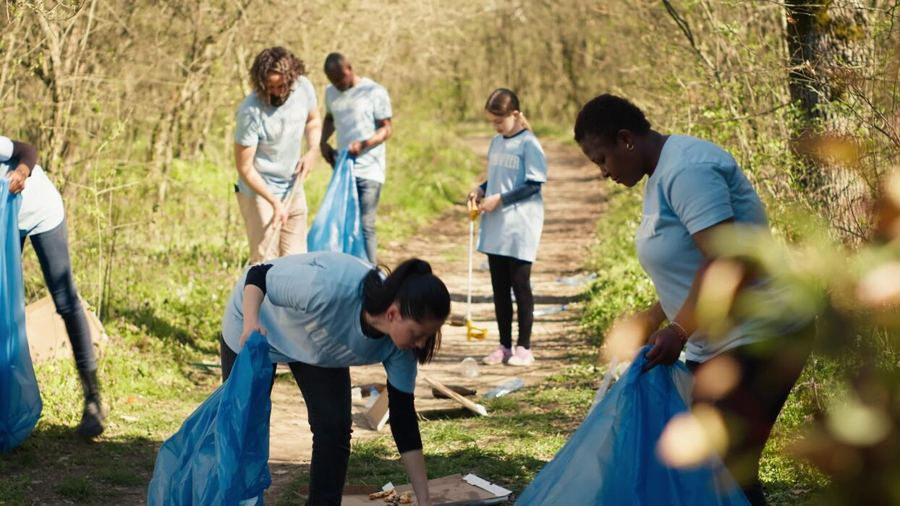
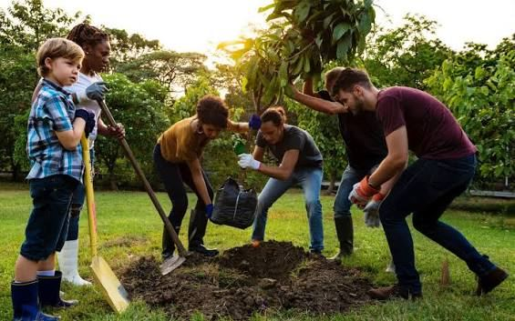

Aptis Speaking
Part 1: In this part, I am going to ask you three short questions about yourself and your interests. You will have 30 seconds to reply to each question.
1. Describe your typical day.
=> I usually get up at 7 a.m. I have breakfast and go to work. In the evening I have dinner and watch TV with my family. I go to bed at 10PM. I try to follow this routine every day because it helps me stay healthy. Sometimes I feel a bit tired, but I always sleep well at night. I think a regular routine is important for my work.
2. Tell me about your friends.
=> I have many friends. They are friendly and kind. They often help me when I need. In free time, we often play sports or go shopping together. It is fun because we can share happy moments. We have known each other for many years and trust each other a lot. I can share almost anything with them. I feel very grateful to have such good friends.
3. Tell me about your first school
I am going to talk about my first school. It was kindergarten near my house. It was big and beautiful. Here I could play many games with my friends. I really liked it. I still remember my teachers because they were very kind to me. Sometimes I look at old photos and feel nostalgic. I hope to visit my old school again someday.
Part 2: In this part, I'm going to ask you to describe a picture. Then I will ask you two questions about it. You will have 45 seconds for each response.
 |
1. Describe the picture => In this picture, I can see a man and a woman. They are at home. They are hanging a picture on the wall. They are wearing casual clothes and look happy. In the room, I can see some furniture and some plant. I like this picture because I like decorating the house. |
2. Have you ever repaired or rearranged the furniture in your house?
=> Yes, I have. Last month, I painted my room and bought a new sofa. I rearranged the table and the TV. My room looked more beautiful and convenient. It took me a whole weekend to finish everything. I felt very proud when I saw the final result. Now I enjoy spending time in my room even more.
3. Why do people like to change the way they decorate their homes to make them look different from how they originally were?
=> There are some reasons why people like the change the way they
decorate their homes. First, it makes the house more beautiful and
convenient. Second, they enjoy changes. Last, it is a way to relax
. Also, some people just want to follow new trends they see online. I
think changing furniture can improve their mood too. It makes the house
feel fresh again.
Part 3: In this part, I'm going to ask you to compare two pictures, and I will then ask you two questions about them. You will have 45 seconds for each response.
1. Tell me what you can see in these two pictures.
 |
 |
=> The two pictures show people in different places
In the first picture I can see some people in the park. They are picking up rubbish. Maybe they are cleaning the park.
In the second picture I can see some people in the park. They are planting trees. They are working hard and look focused.
The people in both pictures enjoy community activities. Both activities are helpful for the environment and the community. I think more people should join these kinds of activities. It also brings people together.
2. Tell me about a time when you took part in a community activity.
=> Last year, I joined a community activity. We taught poor children in a mountainous area how to read and write. It was hard but meaningful. I felt happy and proud of myself. It was a great experience because I learned to be more patient. The children were very excited to learn new things. I would love to join this activity again.
3. Do you think it is important for people to help protect the environment?
=> Yes, I do. I think the environment is very important. It can directly affect our health. If we protect the environment, we can stay healthy and prevent health problems such as cancer, heart diseases and so on. For example, planting more trees can reduce air pollution in cities. I always try to recycle at home. Small actions can make a big difference.
Part 4: In this part, I'm going to show you a picture and ask you three questions. You will have one minute to think about your answers before you start speaking. You will have two minutes to answer all three questions.
Tell me about a time when someone helped you.
How did you feel at that time?
Why is it important to help others?
=> Regarding the first question, today I'm going to talk about a time when someone helped me. Last year, I had a difficult English test. My friend helped me study before the exam, and I passed it successfully. I was very worried before the test, but my friend explained the lessons clearly. Thanks to her help, I felt more confident. I am really thankful for her support.
Turning to the second question, I felt very happy and thankful because my friend spent a lot of time helping me. I realized how important friendship is in difficult times. It also motivated me to help others when they need it.
About the last question, I think it is important to help others because everyone needs help sometimes. Helping others also makes our community kinder and stronger. It also creates a positive cycle because people are more willing to help back. I always try to help my classmates when they have problems.